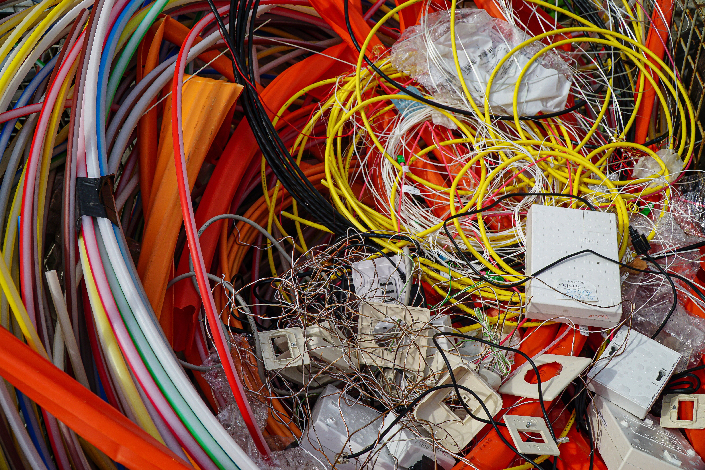
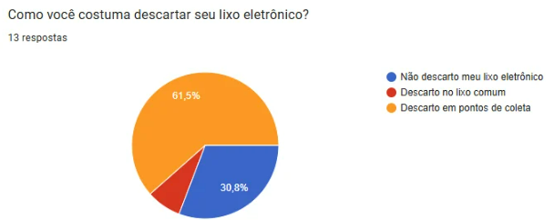
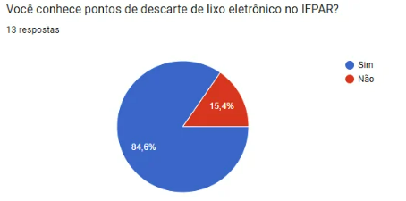
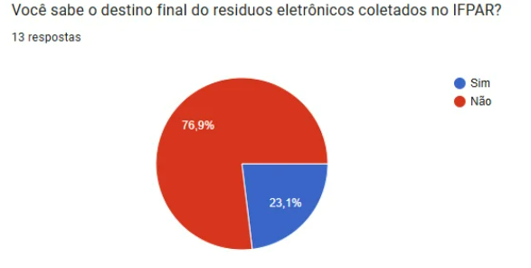
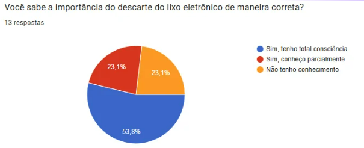

Pesquisa sobre pontos de descarte de lixo eletrônico no IFPAR
Para a matéria de Gestão Organizacional, foi realizada uma pesquisa com relação ao descarte de lixo eletrônico e o conhecimento e a opinião de servidores e alunos do IFRN campus Parnamirim sobre o descarte de lixo eletrônico.

Problemas relavantados
Para a pesquisa, foi feito um formulario no Google Forms para alunos e servidores do IFPAR, no qual obteu-se que 84,6% das pessoas que responderam possuem lixo eletrônicos em suas casas, o que significa grande demanda de dejetos ao se tratar dessa temática do descarte, e 61,5% descartam corretamente seu lixo, mas temos que levar uma margem de erro considerável e que as pessoas conhecem o único ponto de coleta do campus, mas ele é só para eletrônicos não informáticos, o que foge um pouco do nosso foco.


Porém, tivemo dificuldades nessa coleta de dados porque informalmente muitas pessoas não conhecem esse destino final e coincidentemente quem respondeu o formulário aparentemente conhece esses pontos de coleta e muitas pessoas não conhecem muito bem a importância desse gesto, levando em consideração que uma grande parte dos participantes são servidores.


Dessa forma, se constatou-se os seguintes problemas:
Inconformidade com as normativas
Em uma Instituição pública, como O Instituto Federal, é imprescindível que todo o descarte de equipamento informático seja realizado de forma devida e documentada, caracteristica ausente no processo realizado pelo departamento de Tecnologia de informação do campus.
Ausência de comunicação entre setores
Durante pesquisas, foi percebido que o único setor responsável pelo descarte e o de Tecnologia da Informacão, sendo desconhecido para outros setores o processo realizado, gerando uma super-dependencia em poucos indivíduos para a transparência do processo.
Problemas relatados no formulário
- Muito lixo eletrônico
- Indisponibilidade de pontos de descartes
- Desconhecimento sobre o destino final dos dejetos
- Desinformação na parte da importância de descarte do lixo eletrônico
Possíveis Soluções
- Identificar motivos para o acumulo de lixo e reduzir o consumo de eletrônicos denecessários
- Mais pontos de coletas ao redor do campus
- Palestras de concientização e informacional sobre o descarte de lixo eletrônico